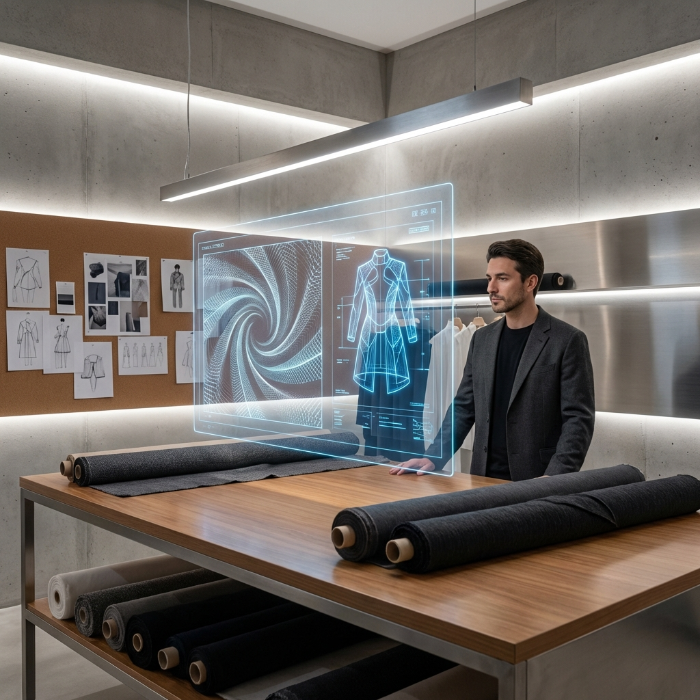
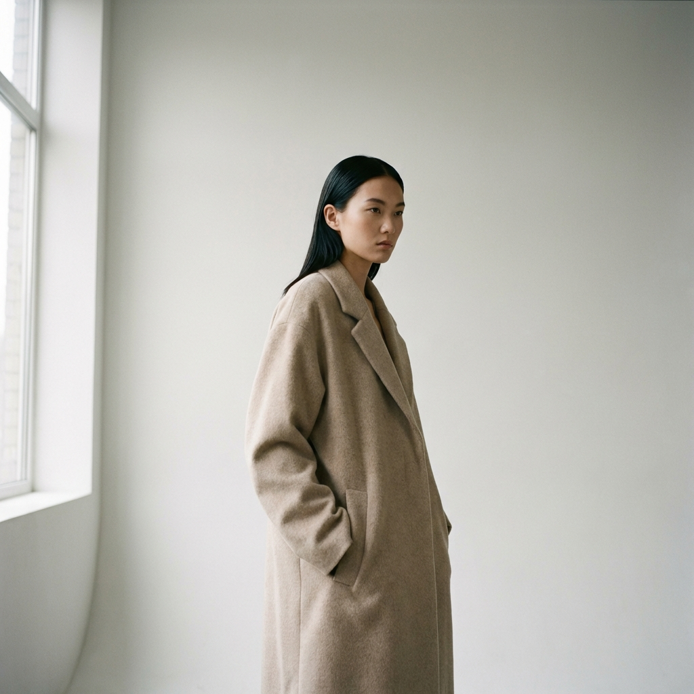
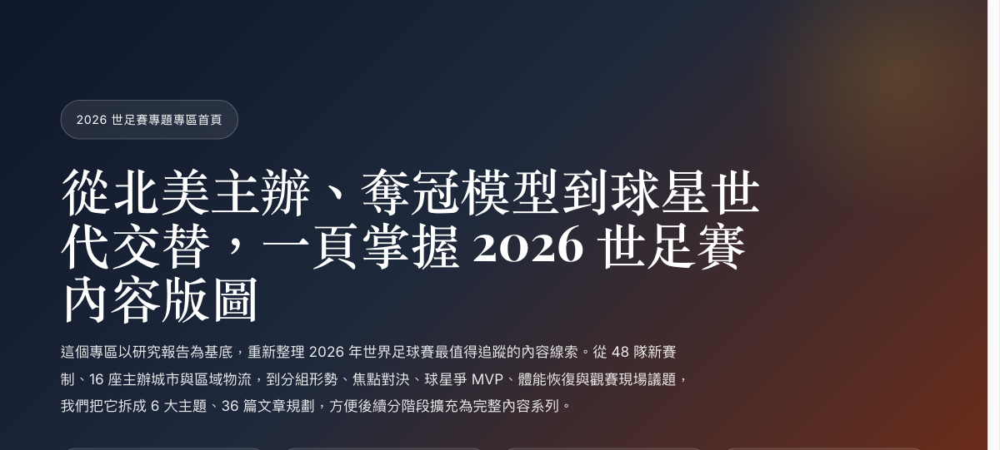
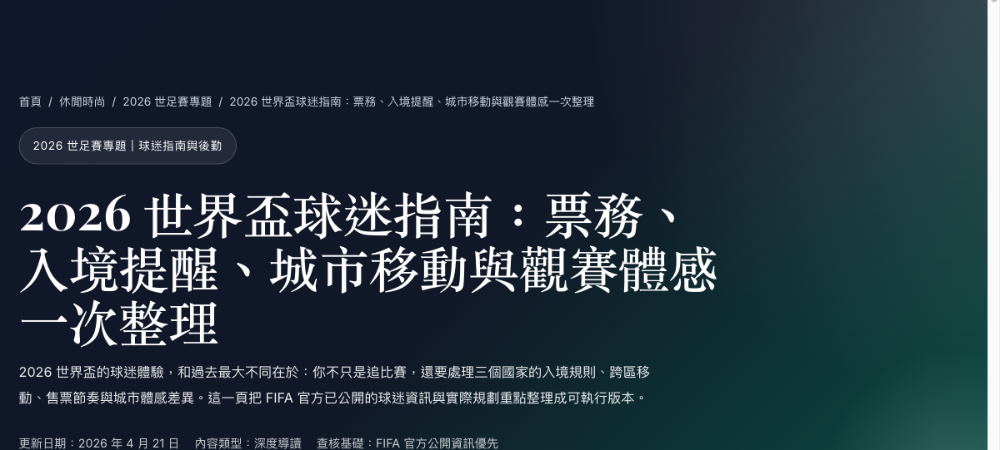
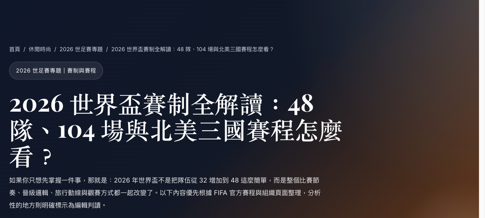

離婚後先做哪 6 件事：重整生活秩序的可執行清單
首月六大優先：財務、住居、孩子安排、法律文件、情緒急救、社交暫停。每項附判斷標準與可執行步驟，讓妳能有條不紊地重建日常。
閱讀全文 →深入探索六大時尚與生活主題

深入解析全球四大時裝週及高級訂製時裝的最新動向，透過第一手報導、設計師專訪與趨勢分析，為讀者精準解讀每一季的時尚風向與背後故事。
閱讀更多 →
獨家專訪頂尖設計師、創意總監與時尚偶像，揭示他們的創作靈感、品牌哲學與職涯故事，探索時尚產業的幕後精神。
閱讀更多 →重新定義日常穿搭的質感美學，從膠囊衣櫥到混合辦公風格，教您如何在舒適與品味之間取得完美平衡。
閱讀更多 →探索健康與時尚結合的生活方式，涵蓋機能運動服飾、專業健身課程與瑜伽指導，追求身心靈平衡的完美狀態。
閱讀更多 →連結時尚與自然探險的無限可能，介紹戶外機能裝備、風格化的露營與登山穿搭，體驗充滿冒險精神的自然之美。
閱讀更多 →精選涵蓋藝術、美食、旅行、居家設計等深度內容，將時尚眼光擴展至生活每一個細節，展現精英生活的完整風貌。
閱讀更多 →這個區塊會由內容流水線自動同步最新文章，確保首頁也能看見新內容。

首月六大優先：財務、住居、孩子安排、法律文件、情緒急救、社交暫停。每項附判斷標準與可執行步驟，讓妳能有條不紊地重建日常。
閱讀全文 →
從日常工作場景出發，五個不用寫程式就能開始的 AI 入門動作，幫妳快速判斷是否值得投入時間與資源。
閱讀全文 →
Elite Fashion 2026 世足賽專題專區首頁，整理 48 隊新賽制、16 座主辦城市、分組觀戰、爭冠熱門、球星主線與球迷指南，並串連 6 個主題分頁與 36 篇後續延伸文章方向。
閱讀全文 →
告別旅行疲勞。Horizon X-Space 太空漂浮安眠脖枕以調節式固定扣與高效率支撐設計，改善長途旅行頸部痠痛、姿勢不良與難以入睡，讓每段旅程都更接近真正的恢復。
閱讀全文 →
根據 FIFA 官方票務、賽程與組織頁整理 2026 世界盃球迷最需要知道的資訊：4 月票務釋出、Supporter Entry Tier、入境提醒、三國移動與觀賽規劃。
閱讀全文 →
整理 FIFA 官方已公布的 2026 世界盃核心資訊：48 隊新制、104 場賽事、6 月 11 日至 7 月 19 日賽程、三國 16 城主辦與東道主首戰安排，一篇看懂本屆結構。
閱讀全文 →Elite Fashion 是一個專注於引領時尚潮流與精英生活方式的專業媒體平台。我們致力於為讀者帶來最前沿的時尚資訊、最深入的設計師訪談，以及最實用的生活品味指南。
從全球時裝週的秀場趨勢到日常生活的休閒穿搭，從身心靈的健康追求到戶外探險的自然體驗，我們用專業的眼光和獨特的視角，為您呈現一個完整的精英生活藍圖。